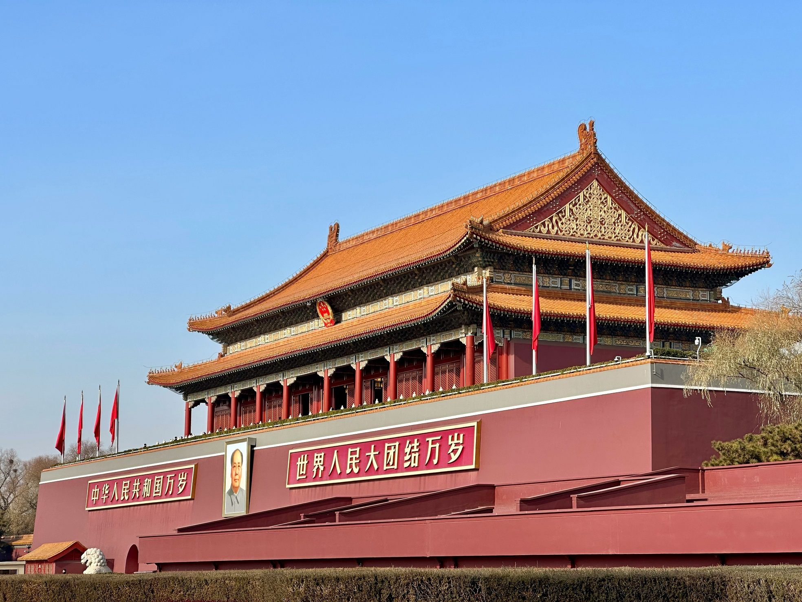
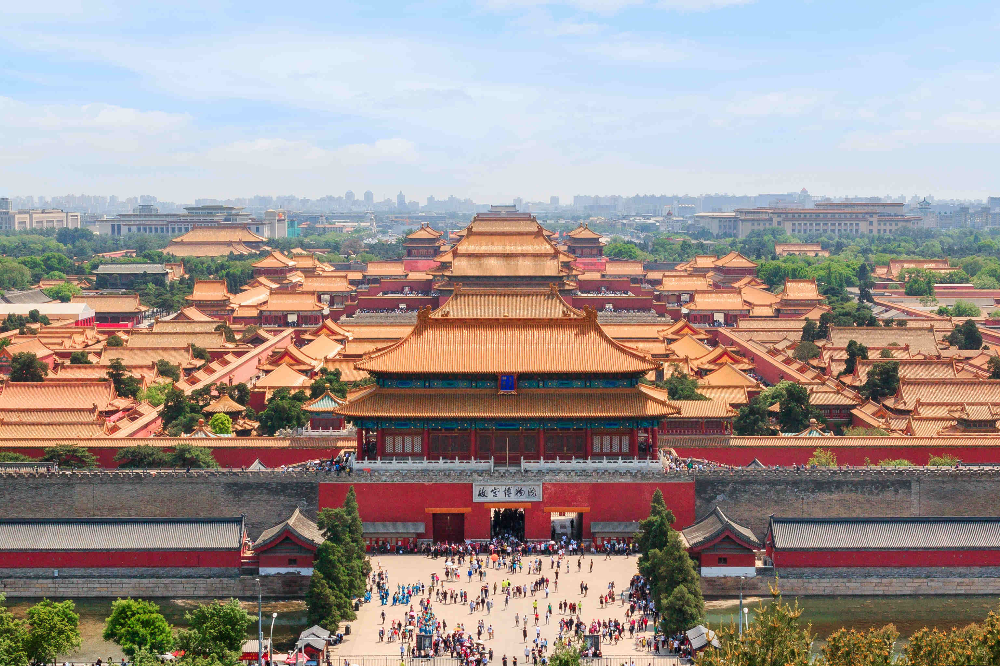
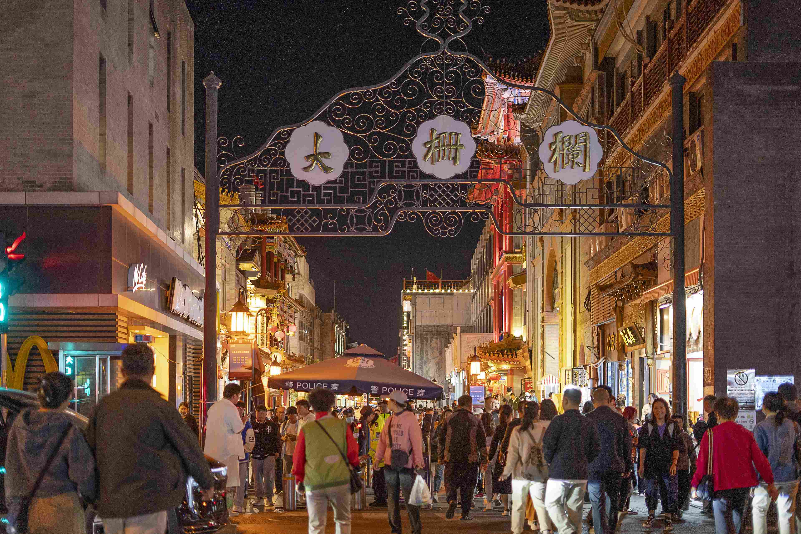
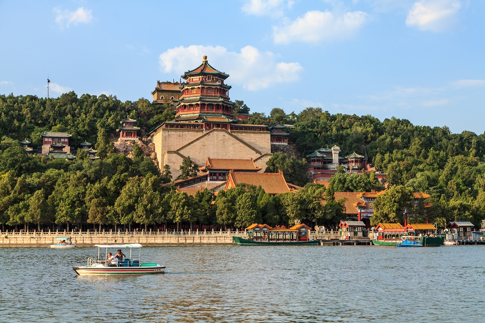
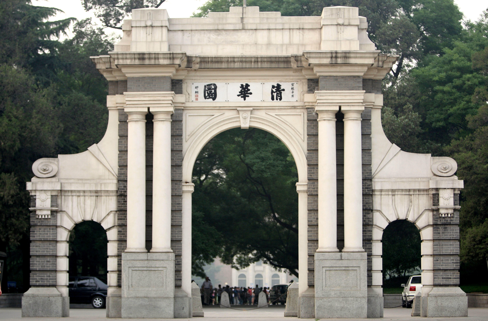
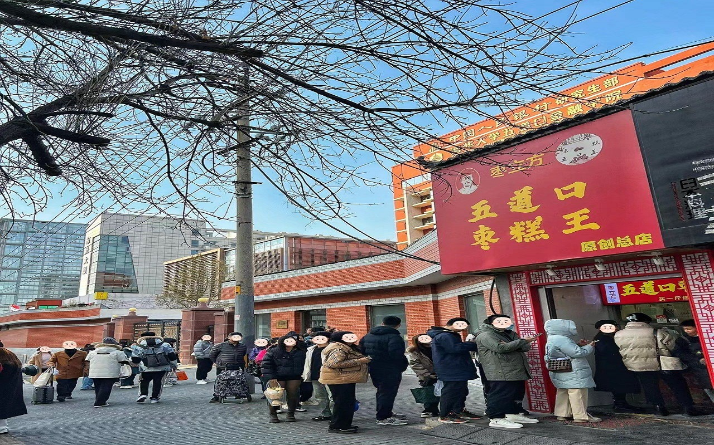
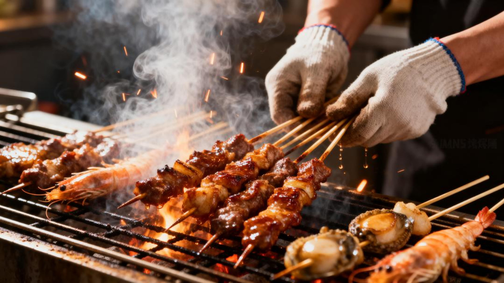
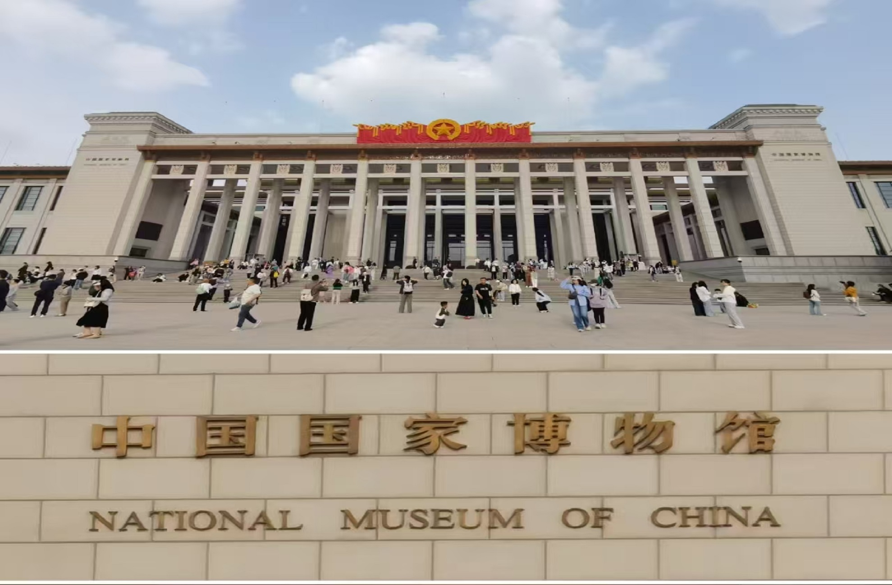
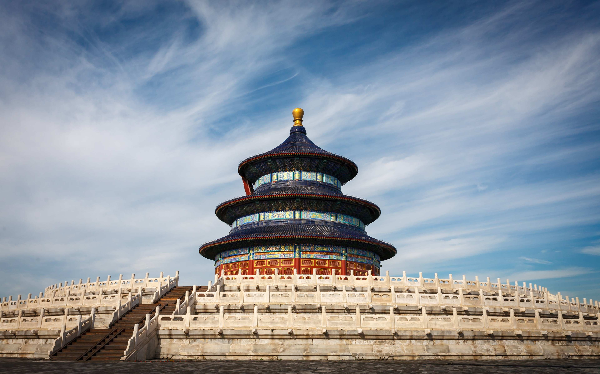
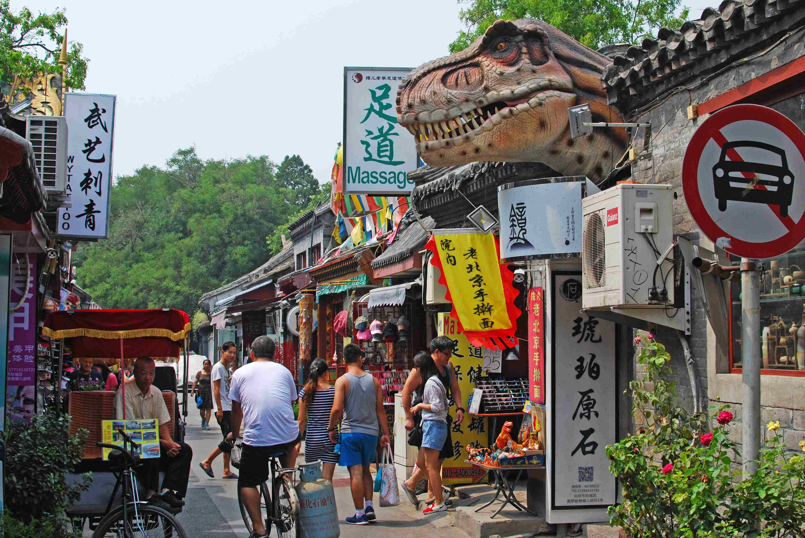

4天3晚经典行程
预算 ¥1250，劳逸结合，体验最佳
行程概览
- 行程天数
- 4 天 3 晚
- 总预算
- 约 ¥1250（含交通、住宿、门票与餐饮，以学生票与青旅床位估算）
- 适合人群
- 时间适中、想一次打卡京城精华的学生党与穷游党
Day 1 · 中轴线核心（天安门 → 故宫 → 景山 → 前门）
天安门广场（免费）
建议提前 30 分钟到达，预留安检与排队时间。可拍照留念，感受广场开阔与建筑对称之美。

故宫博物院（学生票 ¥20，需提前 7 天预约）
沿中轴线由南向北直穿至神武门，核心宫殿不走回头路，游览约 3.5 小时。午门进、神武门出，动线最顺。
午餐
建议自带干粮或在故宫内餐厅简单解决；景区内价格偏高，人均约 ¥50。想省钱可多带面包、水果与水。
景山公园（门票 ¥2）
出神武门过马路即到。登山约 20 分钟，万春亭是拍摄故宫全景的经典机位，晴天尤其出片。

前门大街 / 大栅栏（免费）
逛老北京商业街，看中西合璧的立面与老字号招牌。忍住别在主街冲动买「特产」，性价比往往一般。

住宿推荐
今晚住哪：推荐前门 / 大栅栏附近青年旅舍，例如「北京前门青年旅舍」，床位约 ¥80–100/晚。交通便利，步行可达天安门，方便次日继续中轴及周边行程。
Day 2 · 皇家园林（颐和园 → 圆明园 → 清北打卡）
颐和园（学生票 ¥20）
建议从新建宫门进，清晨昆明湖与佛香阁光线柔和，适合拍照。慢走细逛约 3 小时，注意保存体力。

圆明园（学生票 ¥10）
从藻园门进，重点游览西洋楼遗址区。夏季荷塘景色值得绕道一看，记得防晒与补水。

午餐
推荐西苑地铁站附近美食城，选择多、人均约 ¥30。也可尝试周边高校食堂（视开放政策而定），性价比更高。
清华大学西门 / 北京大学东门（门口免费打卡）
校门经典机位留念即可。进校通常需提前预约或由校内师生协助预约，务必提前确认当日政策。

五道口大学城
逛枣糕王（约 ¥15/斤）、淘特色小店，感受「宇宙中心」的年轻氛围。适合买一点次日路上吃的小食。

住宿推荐
今晚住哪：推荐海淀 / 五道口一带，例如「北京五道口青年旅舍」，床位约 ¥80/晚。次日去长城方向更顺，地铁与公交接驳方便。
Day 3 · 长城之旅（八达岭长城 → 牛街美食）
德胜门 → 877 路公交 → 八达岭
德胜门乘 877 路（刷卡 ¥6，现金 ¥12），车程约 2.5 小时直达八达岭长城。建议尽早排队占座，带足水。
八达岭长城（学生票 ¥20）
建议走北线，视野更开阔。务必自带水和干粮，山上售卖点少、价格是市区数倍。穿防滑鞋，量力而行。

午餐
建议在长城脚下简餐或继续吃自带干粮，避开景区内高价套餐。
S2 线返程 → 清河站 → 地铁
乘市郊铁路 S2 线（约 ¥6，以当日票价为准）至清河站，再换乘地铁回城。沿途可感受京张铁路百年历史，具体时刻以 12306 / 车站公告为准。
牛街美食打卡
推荐白记年糕的驴打滚（约 ¥15/斤）、洪记小吃的牛肉包子（约 ¥3/个）、聚宝源熟食窗口。少量多样、趁热吃最香。

住宿推荐
今晚住哪：建议回到前门 / 大栅栏附近青旅，方便 Day 4 寄存行李、逛胡同与前往火车站或机场。
Day 4 · 文艺胡同（国博/天坛 → 南锣鼓巷 → 什刹海 → 返程）
国家博物馆 或 天坛公园（二选一）
方案 A：国家博物馆——免费但务必提前预约，「古代中国」展厅是精华，冷气足、适合避暑慢看。方案 B：天坛公园——学生票约 ¥17，重点看祈年殿，感受昔日皇家祭天礼仪。两方案都需提前规划入场时段。


午餐
推荐前门附近胡同里的特色小吃店，或护国寺小吃等连锁，人均约 ¥30，清淡管饱即可。
南锣鼓巷（免费）
主街感受氛围即可；想深度游可拐进两侧人少的支巷胡同，安静好拍、少踩坑。

什刹海 / 后海（免费）
银锭桥一带看夕阳与波光，感受老北京的闲适。不必强求游船，沿湖走走同样治愈。

返程
根据车次或航班，预留充足时间前往北京站、北京西站、北京南站或首都/大兴机场。地铁+步行请把安检与可能的堵车算进提前量。